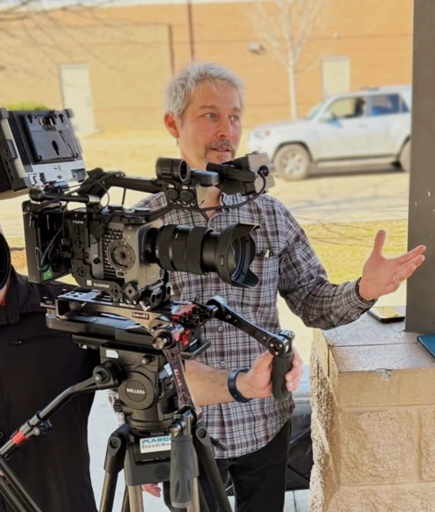
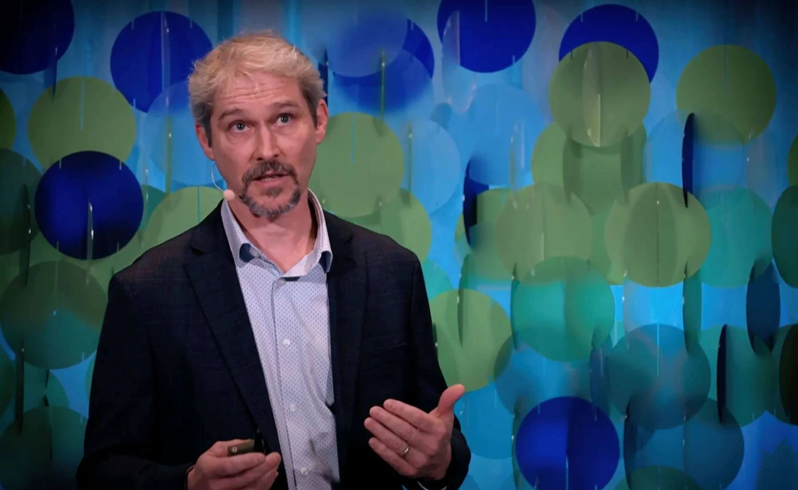

Solutions to humanity's greatest challenges
start with strong narrative foundations.
Strategic communications advisor and award-winning documentary filmmaker helping organizations build durable narrative infrastructure, unite diverse stakeholders, and accelerate systemic change.

Three Decades of Uniting Stakeholders Through Narrative Strategy
As founder of the American Resilience Project (ARP), Roger has spent over 30 years pioneering narrative strategies that unite disparate stakeholders around shared solutions.
In an era of acute polarization and communication fatigue, high-stakes organizations often struggle to translate complex science, energy policy, and national security data into narratives that resonate. Roger bridges this gap by discovering the underlying human truths that move people from skepticism to consensus.
Moving beyond conventional public relations, Roger equips leadership teams with the narrative cornerstones needed to navigate regulatory friction and convert critical initiatives into measurable, long-term impact.
From America's Heartland to West Point: Overcoming Message Friction
Through his strategic communications advisory, Roger brings this narrative expertise directly to organizations navigating complex challenges across defense, infrastructure, agriculture, clean energy, and public health.
Airport Enterprise Alignment
When leadership pushed back on "another corporate video," Roger engineered an enterprise-wide narrative architecture unifying sustainability and operational pride across 10,000 employees.
Heartland Agriculture Coalitions
Bridged deep partisan divides by centering authentic farmer voices, transforming regulatory friction into bipartisan legislative support for resilient agricultural policy.
National Security & Defense
Reframed clean energy and grid resilience as vital operational vulnerabilities for military leadership at West Point and the Pentagon, directly helping secure key defense appropriations.

Anthropological Fieldwork Meets Documentary Craft
Roger's methodology draws from ethnographic research and documentary filmmaking, shaped by his studies in Anthropology at Johns Hopkins University and Communication at Stanford.
Before founding ARP, Roger produced award-winning content for National Geographic and PBS: foundational experiences that taught him how to uncover stories that resonate on deeper human levels. He has taught at business schools, led immersive simulations for executives at Fordham University, and moderated high-level forums with government and industry leaders.
When not working with clients, Roger coaches youth baseball in Western Massachusetts, finding that building team cohesion on the field offers surprising, practical insights that translate directly to executive communications strategy.
Three Principles That Guide My Work
My approach to communication challenges is guided by three core principles developed across three decades of filmmaking and executive strategy:
The Same Solution, Different Reasons
People don't need to share identical values to support the same initiative. By identifying where different interests naturally converge, we can build support from stakeholders who might otherwise remain divided.
Emotion Matters as Much as Data
While facts are important, emotional connections create more meaningful relationships with audiences. Authentic storytelling that connects on human levels drives action more effectively than statistics alone.
Narratives Are a Strategic Asset
Communication isn't just what you say: it's the connection between what you do with why you do it. When organizations develop coherent narratives, both internal alignment and external engagement improve dramatically.
My Approach to Communications Challenges
Every engagement follows a structured, ethnographic methodology ensuring that strategy is deeply grounded in human reality and client mission.
Ecosystem Assessment
I begin each engagement with a thorough assessment of your communication ecosystem: who you're trying to reach, what you're saying, and where you're getting stuck. This ethnographic process helps me understand your organization's unique culture and challenges before developing any strategic recommendations.
Filmmaking Meets Strategy
My style combines filmmaking expertise with strategic communications knowledge. Whether I'm directing a documentary that captures your mission or designing a comprehensive communications plan, I focus on finding authentic stories that connect with your stakeholders on both emotional and intellectual levels.
Direct, Senior-Level Partnership
I work directly with clients throughout the entire process, from initial concept development through final delivery. This hands-on approach ensures consistency of vision and allows me to adapt quickly as projects evolve. You'll always work with me personally, not a rotating team of associates who might lose sight of your objectives.
Educational Pedigree &
Institutional Milestones
A career shaped by top-tier academic institutions, national broadcast networks, and mission-driven leadership.
Stanford University
M.A. in Communication (Documentary Film & Video)
Johns Hopkins University
B.A. in Anthropology with focus on ethnographic research
American Resilience Project
Founder & Executive Director driving national narrative policy
National Geographic & PBS
Documentary Producer alumnus crafting high-impact human stories
Fordham University
Guest Lecturer & Simulation Facilitator, Gabelli School of Business
Cross-Sector Advisory
Defense, clean energy, infrastructure, food security & public health
Trusted by Decision-Makers
Across Sectors
"Roger created a strategic narrative that didn't just document our flooding challenges, it catalyzed cross-jurisdictional collaboration that resulted in action that's harder to accomplish through traditional advocacy channels."
"Roger opened doors for our company by helping us communicate to our investors and other stakeholders the complexities and urgency of a just energy transition."
Ready to Strengthen
Your Strategic Narrative?
Whether preparing for a critical legislative push, aligning leadership across a major initiative, or producing a high-impact documentary, let's discuss how narrative strategy can turn your challenge into an advantage.